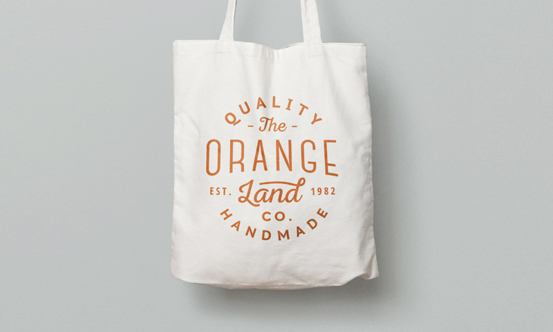
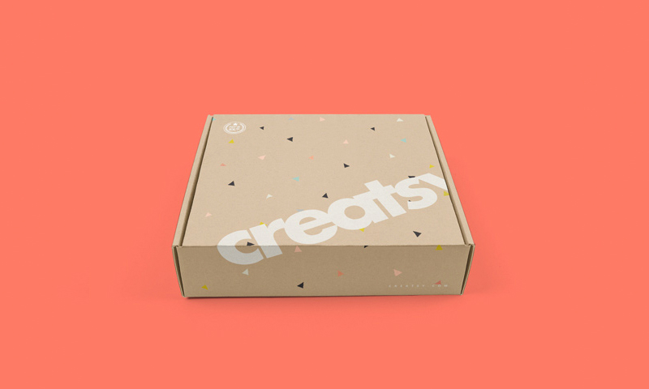

ΚατασκευέςΣυνεργεία εργοταξίουΕργάτες, εργοδηγοί, βοηθοί και βιομηχανικά χέρια.
Βρείτε εργάτες
Ροές στελέχωσης για ελληνικές επιχειρήσεις
Βρίσκουμε ελεγμένο προσωπικό που κρατά την επιχείρηση σε κίνηση
Η AmberLane αναλαμβάνει εύρεση, έλεγχο, συμμόρφωση, μετεγκατάσταση και αντικατάσταση προσωπικού για φιλοξενία, κατασκευές, εφοδιαστική και φροντίδα σε όλη την Ελλάδα.

ΞενοδοχείαΕποχικές ομάδεςΚαθαριότητα, υποδοχή, κουζίνα, εστίαση και υποστήριξη μονάδων.
Καλύψτε βάρδιες

ΕφοδιαστικήΠροσωπικό αποθήκηςΠαραλαβές, συσκευασία, φόρτωση, αποστολές και υποστήριξη.
Προχωρήστε
ΓραφείοΔιοικητική υποστήριξηΑξιόπιστα άτομα για υποδοχή, διοικητική υποστήριξη και συντονισμό.
Κάλυψη ρόλων

ΦροντίδαΥπηρεσίες σπιτιούΚαθαριότητα, φύλαξη παιδιών, φροντίδα ηλικιωμένων και οικιακή βοήθεια.
Χτίστε σιγουριά

ΒιομηχανίαΈτοιμη δεξαμενήΕλεγμένοι υποψήφιοι για απαιτητικά περιβάλλοντα.
Στήστε ομάδες

ΤεχνικάΕιδικοί ρόλοιΠρακτικός έλεγχος για ρόλους όπου μετρά η αξιοπιστία.
Ελέγξτε ικανότητες

ΣυμμόρφωσηΧαρτιά οργανωμέναΆδειες, μετεγκατάσταση, ασφάλιση και βήματα ένταξης.
Σωστή αρχή
Η AmberLane είναι φτιαγμένη για ομάδες που δεν αντέχουν κενές βάρδιες
ξενοδοχεία
τουριστικές μονάδες
αποθήκες
εργολάβοι
καφέ
μονάδες φροντίδας
εργοστάσια
ιδιωτικές κατοικίες
4 λόγοι που οι επιχειρήσεις χρησιμοποιούν την AmberLane για να χτίσουν δυναμικό προσωπικού
Προσλαμβάνουμε για τη βάρδια, όχι μόνο για το βιογραφικό
Τα προφίλ ελέγχονται με βάση την πραγματική δουλειά: ώρες, διαμονή, φυσικές απαιτήσεις, γλώσσα και προσδοκίες του υπευθύνου.
Η συμμόρφωση είναι μέρος της υπηρεσίας
Βίζες, άδειες, συμβάσεις, ασφάλιση και μετεγκατάσταση παρακολουθούνται ώστε η πρόσληψη να μη γίνει άλλο ένα διοικητικό βάρος.
Οι λειτουργίες σας μένουν καθαρές
Λίστες υποψηφίων, έγγραφα, αφίξεις, αντικαταστάσεις και ανοιχτοί ρόλοι μένουν ξεκάθαρα από το πρώτο αίτημα έως την πρώτη ημέρα.
Σχεδιασμένο για επαναλαμβανόμενη εποχική ζήτηση
Η στελέχωση σε φιλοξενία, κατασκευές και εφοδιαστική είναι κυκλική. Χτίζουμε ροή υποψηφίων που επαναχρησιμοποιείται πριν έρθει η πίεση.
Μειώστε την τριβή στις προσλήψεις και σταθεροποιήστε τη λειτουργία
Γιατί να χρησιμοποιήσετε την AmberLane για στελέχωση
Περάστε από σκόρπιες συστάσεις, βραδινά τηλεφωνήματα και αβέβαια χαρτιά σε μία οργανωμένη ροή από το αίτημα ρόλου έως την άφιξη εργαζομένου.
Έτοιμοι να στελεχώσετε την επόμενη σεζόν χωρίς πανικό τελευταίας στιγμής;
Ξεκινήστε αίτημα στελέχωσηςΓιατί μπορείτε να εμπιστευτείτε την AmberLane
Είμαστε πρακτικοί συνεργάτες στη στελέχωση που αντέχει στην πίεση.
Η AmberLane χτίστηκε γύρω από πρακτική πρόσληψη, άμεση επικοινωνία και καθαρή εκτέλεση. Ο στόχος είναι απλός: να δώσει στους επιχειρηματίες αξιόπιστη διαδρομή από την ανάγκη στελέχωσης έως ανθρώπους που μπορούν όντως να εργαστούν.
Ταιριάζουμε το προφίλ του εργαζομένου με το πραγματικό περιβάλλον εργασίας, όχι με έναν γενικό τίτλο ρόλου. Αυτό σημαίνει λιγότερες εκπλήξεις, καλύτερες πρώτες εβδομάδες και διαδικασία που οι υπεύθυνοι μπορούν να παρακολουθήσουν χωρίς ατελείωτο κυνηγητό.
Λειτουργεί σε πραγματικές επιχειρήσεις
Όπως μπορείτε να δείτε, η σταθερή στελέχωση αλλάζει την επιχείρηση
Οι λειτουργικές εκτιμήσεις διαφέρουν ανά χώρα, ρόλο, σεζόν και κατάσταση εγγράφων.
Τι συμβαίνει όταν ζητάτε εργαζόμενους από την AmberLane
Συμπληρώνετε αναλυτική περιγραφή στελέχωσης
Καταγράφουμε ρόλο, τοποθεσία, ημερομηνίες, διαμονή, γλώσσα, μισθολογικό εύρος και μη διαπραγματεύσιμα.
Κλήση εκκίνησης
Επιβεβαιώνουμε τον ρόλο, εξηγούμε ρεαλιστικά χρονοδιαγράμματα και συμφωνούμε στην ποιότητα υποψηφίων πριν ξεκινήσει η αναζήτηση.
Αναζήτηση, έλεγχος και έγγραφα
Φτιάχνουμε λίστα υποψηφίων, ελέγχουμε την καταλληλότητα, συγκεντρώνουμε έγγραφα και επισημαίνουμε κινδύνους πριν επιλέξετε.
Προσφορά, ταξίδι και πλάνο ένταξης
Οργανώνουμε εγκρίσεις, ημερομηνίες άφιξης, απαιτήσεις πρώτης ημέρας και παράδοση πληροφοριών στους υπευθύνους.
Οι εργαζόμενοι ξεκινούν
Μένουμε κοντά τις πρώτες εβδομάδες και διαχειριζόμαστε υποστήριξη αντικατάστασης αν μια τοποθέτηση δεν κρατήσει.
Λειτουργεί και στην πράξη
Μελέτες περιπτώσεων
Εποχική ομάδα φιλοξενίας
Ένας ξενοδοχειακός όμιλος χρειαζόταν καθαρή διαδρομή για εποχικό προσωπικό πριν την αιχμή ζήτησης. Η AmberLane χαρτογράφησε τα προφίλ ρόλων, έλεγξε πρακτική καταλληλότητα και συγκέντρωσε τα έγγραφα ώστε οι υπεύθυνοι να προσλάβουν χωρίς συνεχείς επαφές.
18ρόλοι ομαδοποιημένοι σε επαναλαμβανόμενα προφίλ πρόσληψης.
5εβδ.παράθυρο σχεδιασμού από περιγραφή έως πρώτες αφίξεις.
Ας μιλήσουμε για στελέχωση
Η λύση μας για ροή προσωπικού
Χτίζουμε διαδικασία πρόσληψης ανά ρόλο για επιχειρήσεις που χρειάζονται αξιόπιστους ανθρώπους, όχι τυχαίες αιτήσεις. Κάθε αίτημα γίνεται οργανωμένη ροή στελέχωσης με αναζήτηση, έλεγχο, συμμόρφωση, ένταξη και όρους αντικατάστασης.
Η AmberLane βοηθά τις ομάδες να καταλάβουν ποιον χρειάζονται, από πού μπορούν να έρθουν υποψήφιοι, ποια χαρτιά απαιτούνται και ποιο χρονοδιάγραμμα είναι ρεαλιστικό πριν η πίεση φτάσει στη λειτουργία.
Κουμπώνουμε στη λειτουργική σας ροή
Ξενοδοχεία
Τουριστικές μονάδες
Εφοδιαστική
Κατασκευές
Αποθήκες
Μισθοδοσία
Άδειες
Ασφάλιση
Διαμονή
Ένταξη
Φροντίδα
Γραφεία
Εργοστάσια
Εστιατόρια
Κατοικίες
Πώς συγκρινόμαστε
Οι περισσότερες διαδρομές πρόσληψης είτε επιστρέφουν τη δουλειά στον υπεύθυνο είτε εξαφανίζονται μετά την αποστολή ενός βιογραφικού. Η AmberLane μένει μέσα στη λειτουργική πραγματικότητα μέχρι ο εργαζόμενος να ξεκινήσει όντως.
AmberLane
Εσωτερικά
Κλασικό γραφείο
Χωρίς σκόρπια παρακολούθηση
✓
x
μερικές φορές
Έλεγχος καταλληλότητας για πραγματική βάρδια
✓
μερικές φορές
x
Έγγραφα σε μία ροή
✓
x
μερικές φορές
Όροι αντικατάστασης από νωρίς
✓
x
x
Ροή ρόλων για την επόμενη σεζόν
✓
μερικές φορές
x
Τι λένε άλλοι για τη συνεργασία με την AmberLane
"Η μεγαλύτερη αλλαγή ήταν η σαφήνεια. Ξέραμε ποιος έρχεται, τι λείπει και τι έπρεπε να προετοιμάσει κάθε υπεύθυνος."
"Η AmberLane κατάλαβε ότι το εργοτάξιο δεν είναι απλώς σώματα. Έλεγξαν διαθεσιμότητα, αντοχή, έγγραφα και επικοινωνία."
"Έβγαλε πίεση από το διοικητικό μας γραφείο. Τα στοιχεία υποψηφίων και τα χαρτιά ήταν οργανωμένα πριν χρειαστεί να αποφασίσουμε."
Συχνές ερωτήσεις
Σε ποιους ρόλους μπορεί να βοηθήσει η AmberLane;
Φιλοξενία, κατασκευές, εφοδιαστική, βιομηχανία, γραφειακή υποστήριξη, οικιακές υπηρεσίες και φροντίδα. Η καλύτερη εφαρμογή είναι επαναλαμβανόμενη λειτουργική πρόσληψη, ειδικά όταν τα έγγραφα και ο χρόνος έχουν σημασία.
Πόσο χρόνο παίρνει η πρώτη λίστα;
Εξαρτάται από τον ρόλο, τη χώρα προέλευσης, τη σεζόν και τις απαιτήσεις συμμόρφωσης. Τα επαναλαμβανόμενα προφίλ κινούνται πιο γρήγορα όταν η περιγραφή ρόλου είναι καθαρή.
Αναλαμβάνετε άδειες εργασίας και έγγραφα;
Η AmberLane παρακολουθεί τη ροή και υποστηρίζει τα απαραίτητα βήματα τεκμηρίωσης, κρατώντας την επιχείρηση ενημερωμένη για ελλείψεις και κινδύνους χρόνου.
Μπορείτε να υποστηρίξετε εποχική στελέχωση ξενοδοχείων;
Ναι. Οι εποχικές ομάδες φιλοξενίας είναι βασική περίπτωση χρήσης, με καθαριότητα, υποδοχή, εστίαση, κουζίνα, συντήρηση και υποστηρικτικό προσωπικό.
Τι γίνεται αν μια τοποθέτηση δεν πετύχει;
Οι προσδοκίες αντικατάστασης συζητούνται πριν την τοποθέτηση. Ο στόχος είναι να μείνει η λειτουργία σας καλυμμένη, όχι να αντιμετωπιστεί η πρόσληψη ως μεμονωμένη συναλλαγή.
Ποιος χρειάζεται να συμμετέχει από τη δική μας πλευρά;
Συνήθως ένας ιδιοκτήτης ή υπεύθυνος λειτουργίας, μαζί με τον προϊστάμενο που γνωρίζει την καθημερινή δουλειά. Οι καθαρές απαιτήσεις από την αρχή μειώνουν καθυστερήσεις μετά.
Μπορείτε να βοηθήσετε με εργαζόμενους από Νεπάλ, Ινδία και Φιλιππίνες;
Ναι. Η τρέχουσα θέση της AmberLane περιλαμβάνει διεθνή πρόσληψη από αυτές τις αγορές, με έλεγχο και υποστήριξη ροής μετεγκατάστασης.
Είναι μόνο για μεγάλες εταιρείες;
Όχι. Μικρότερες επιχειρήσεις μπορούν να χρησιμοποιήσουν την AmberLane όταν ο ρόλος είναι αρκετά σημαντικός ώστε μια λάθος πρόσληψη ή καθυστερημένη άφιξη να επηρεάσει τη λειτουργία.
Μπορούμε να χρησιμοποιήσουμε την AmberLane για μόνιμους ρόλους;
Ναι. Εποχικές και μόνιμες τοποθετήσεις μπορούν να λειτουργήσουν, αρκεί οι απαιτήσεις και οι προσδοκίες του ρόλου να είναι ξεκάθαρες από την αρχή.
Πώς ξεκινάμε;
Στείλτε ένα σύντομο μήνυμα με ρόλο, τοποθεσία, αριθμό ατόμων, χρονισμό και τυχόν περιορισμούς σε διαμονή ή έγγραφα. Η AmberLane θα το μετατρέψει σε περιγραφή στελέχωσης.
Έτοιμοι να σταματήσετε τις προσλήψεις τελευταίας στιγμής;
Πείτε μας τους ρόλους, τις ημερομηνίες και τις τοποθεσίες που χρειάζεστε. Θα χαρτογραφήσουμε τη ροή στελέχωσης και τα επόμενα βήματα.
Χτίστε τη ροή μου
Δεν είστε έτοιμοι να προσλάβετε; Κλείστε μια κλήση μαζί μας.
Χρησιμοποιήστε την κλήση για να καταλάβετε χρονοδιαγράμματα, έγγραφα και πώς μοιάζει μια ρεαλιστική ροή εργαζομένων για την επιχείρησή σας.
Ας μιλήσουμε